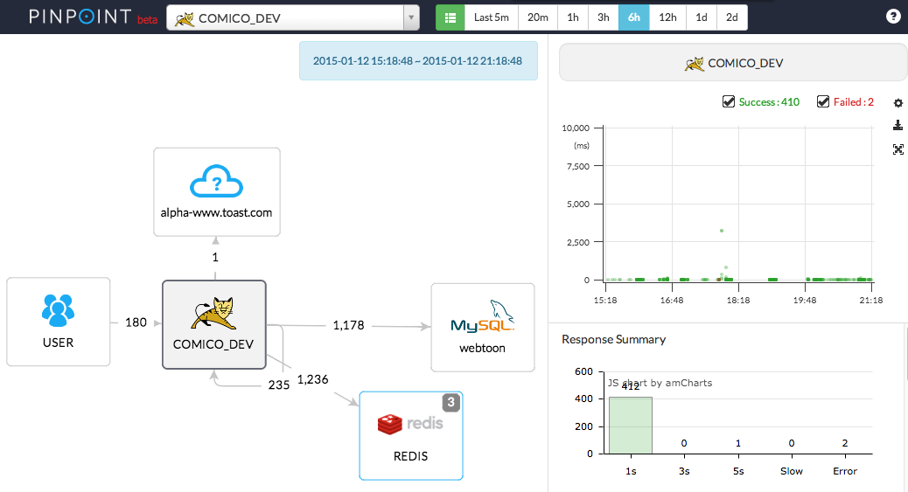
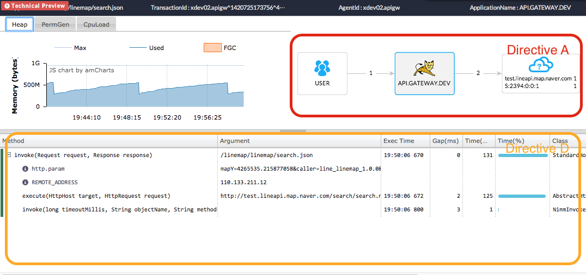
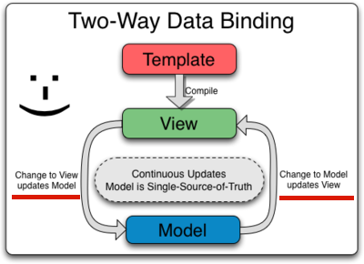
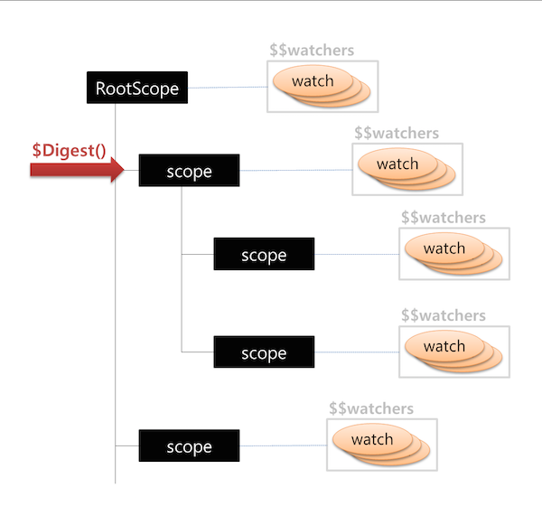
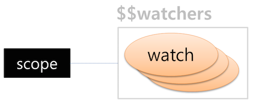

사례를 통한
AngularJS 알아보기
부제 : "AngularJS 성능 이슈에 대한 이야기"
Created by 손찬욱 / chanuk.son
AngularJS 도입 사례
도입 목적
- SPA(Single Page Allication) 형태의 개발이 필요
- 사용자 인터렉션이 많아, 화면 영역 변경이 많은 경우
(Two-Way Data Binding이 필요한 경우) - 유지보수 및 인수인계가 용이
- 다른 MVC 프레임웍에 비해 쉽고 명확함.
개발자의 생산성 짱!
실서비스 적용시 어려움
- 학습 비용에 대한 어려움
- 지원 범위에 대한 이슈
- 디버깅에 대한 어려움
- 성능에 대한 이슈
이 발표는 성능 이슈에 대한 이야기입니다.
적용 사례 1.
Pinpoint
http://dev.pinpoint.nhncorp.com/
 독립된 Directive 내에서의 Two-Way Data Binding
OOO 프로젝트

실시간 으로 각각의 영역을 갱신해야하는 경우, 성능 이슈 발생
헉~! 클릭이 안될 정도로 느려요
Why?
Two-Way Data Binding

이럴 때 써라고 있는 거 아닌가요???
Two-Way Data Binding

- View에 의해 Model 갱신
- Model에 의해 View 갱신
하나의 Model을
지속적으로 갱신
누구(View or Model)를, 언제(변경시점) 갱신할 것 인가?
Two-Way Data Binding 원리
대상 검출
$scope.$watch(watchExpression, listener, [objectEquality]);- directive를 컴파일하고, 링크 작업을 할 때, 등록
- 개발자가 직접 등록
등록된 대상은 $scope.$$watchers에 등록된다.
Two-Way Data Binding 원리
Data 변경 시점은 어떻게 확인 하는가?
주기적으로 데이터 변경 여부를 확인하는 방법
데이터에 값이 설정되어 변경되는 시점에 확인
- HTML 엘리먼트의 이벤트 핸들러가 작동할 때
- Ajax 통신의 결과가 도착 했을때
- URL Hash값이 변경된 경우
- timer에 의해 발생된 tick 이벤트의 핸들러가 작동할 때
- DOM 이벤트(ng-click, ng-mousedown, ng-change, …)가 발생한 후
- $http와 $resource에서 응답이 돌아왔을 경우
- $location에서 URL을 변경한 후
- $timeout이벤트가 발생한 후
- $scope.$apply()나 $scope.$digest()가 호출될 때
Two-Way Data Binding 원리
확인 방법 (Dirty Checking)
기존 값 변경 여부를 확인하기 위해
Digest Loop는 최소 2번. 최대 10번이 호출
Two-Way Data Binding 원리
확인 방법 (Dirty Checking)
$scope.$watch(watchExpression, listener, [objectEquality]);함수 watchExpression의 반환값이 'true'이면 listener 호출
watch대상 확인시, 매번 watchExpression이 호출된다.
Two-Way Data Binding 원리
Dirty Checking 수행 시간
- watch 대상 개수가 n개 이면,
Scope당 수행시간 = 각 watch의 watchExpression 수행시간 * n - 자신을 포함한 자식 Scope의 총 개수가 s개 이면,
한 번의 Digest Loop의 수행시간 = scope당 수행시간 * s - Digest Loop 호출 횟수는 최소 2에서 최대 10번이므로,
총 수행시간 = 각 watch의 watchExpression 수행시간 * n * s * (2~10)
OOO 프로젝트

총 수행시간 = 각 watch의 watchExpression 수행시간 * n * s * (2~10)
10ms * 5(watch대상) * 5 (scope개수) * (2 ~ 10) = 500 ~ 2,500 ms
어떻게 개선할 수 있나?
총 수행시간 = 각 watch의 watchExpression 수행시간 * n * s * (2~10)
10ms * 5(watch대상) * 5 (scope개수) * (2 ~ 10) = 500 ~ 2,500 ms
- scope.$watch 등록시, 가급적 watchExpression을 가볍게.
e.g. function 이 아닌 문자열 - 꼭! 필요한 것만 watch 하여, watch 대상을 줄인다
- 꼭! 필요한 것만 scope의 개수를 가급적 줄인다
- watch의 listener에서는 가급적 데이터를 변경하지 않는다
5ms * 4(watch대상) * 4(scope개수) * 2 = 160ms
Two-Way Data Binding이 아닌, Event Driven 방식을 이용하거나
Throttling 기법을 이용하는 것도 좋은 방법
적용 사례 2.
AngularJS HTML Compiler
스토
http://dev.pinpoint.nhncorp.com/
독립된 Directive 내에서의 Two-Way Data Binding
OOO 프로젝트
실시간 으로 각각의 영역을 갱신해야하는 경우, 성능 이슈 발생
헉~! 클릭이 안될 정도로 느려요
Why?
Two-Way Data Binding
이럴 때 써라고 있는 거 아닌가요???